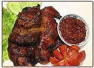

Sambal Ayam Bakar

Bahan:
- 10 buah cabai rawit merah
- 2 buah jeruk limau/nipis, ambil airnya
- 6 sdm kecap manis
- 3 tangkai daun kemangi, ambil daunnya
Cara Membuat:
- Ulek/haluskan cabai.
- Beri air jeruk nipis, kecap manis dan daun kemangi. Aduk rata.
- Hidangkan sambal sebagai pendamping Ayam Bakar Kecap.